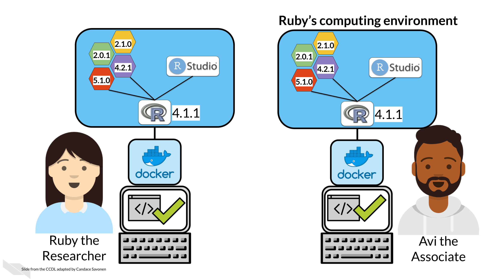

Chapter 7 Launching a Docker image
7.1 Learning Objectives
In the introductory part of this course, we discussed package managers like renv or conda. Recall that even if you have the same packages installed between two computers, you can still get different results!

This is because package versions do influence results as demonstrated by Beaulieu-Jones and Greene (2017).
Package managers address part of this problem, however their limitation is that generally only can help with certain sets of packages. conda really only manages conda installed packages and renv doesn’t help with package management outside of R. Both of these have limited capabilities for cross platform shipping.
This is where Docker can help fill in the gaps.
I don’t even count anymore how many times did my code break when someone else run it. The strange part was — it worked on my machine. That’s where Docker saves the day. If it works on your machine, it will work on any.
Radečić (2020)
![From Beaulieu-Jones and Casey S. Greene, 2017 A.) The status quo requires a reader or reviewer to find and install specific versions of dependencies. These dependencies can become difficult to find and may become incompatible with newer versions of other software packages. Different versions of packages identify different numbers of significantly differentially expressed genes from the same source code and data. B.) Containers define a computing environment that captures dependencies. In container-based systems, the results are the same regardless of the host system.](resources/images/07-launching-docker_files/figure-html/1IJ_uFxJud7OdIAr6p8ZOzvYs-SGDqa7g4cUHtUld03I_gfd7f4e514e_0_0.png "From Beaulieu-Jones and Casey S. Greene, 2017 A.) The status quo requires a reader or reviewer to find and install specific versions of dependencies. These dependencies can become difficult to find and may become incompatible with newer versions of other software packages. Different versions of packages identify different numbers of significantly differentially expressed genes from the same source code and data. B.) Containers define a computing environment that captures dependencies. In container-based systems, the results are the same regardless of the host system.")
7.2 What’s Docker?
One way to ensure that her collaborators have the same computing environment is Ruby could ship her computer to each of her collaborators and have them run the analysis on her computer. But before you buy hundreds of laptops for your projects, we’ll show you how Docker will allow you to send your computing environment to your collaborators in a practical manner.

Ruby can create a Docker image that Avi can use to run the analysis. This way Ruby and Avi know they are using the same computing environment. Now if Ruby and Avi obtain different results, it won’t be because of version differences.

7.3 Install Docker
Go here to install Docker, following the instructions for your particular operating system.
If you don’t have a Docker account create an account when prompted, or go here. After you install Docker, start up Docker desktop by double clicking on the app. It may take some time to start up.
7.4 Getting started with Docker
- Open up your command line.
- First we need to get the Docker image. A Docker image is like a snapshot of your computing environment that you can move from place to place. We can download images from online and then use them to make a container. Containers are what we use to actually run analyses.

From command line, run one of these commands depending on whether you’d like to use Python or Docker:
To obtain the python docker image
docker pull jhudsl/reproducible-pythonTo obtain the R docker image
docker pull jhudsl/reproducible-R- Open up the Docker Desktop app. Click on ‘images’ on the left. This shows the images you currently have available on your computer.

- Return to your command line. Using
cdandlsnavigate to your project repository (or whatever files you’d like to be accessible in your development environment) and we can start up a docker container usingdocker run.
To run the Python docker image
docker run --rm -v $PWD:/home/jovyan/work -e JUPYTER_ENABLE_LAB=yes -p 8787:8787 jhudsl/reproducible-pythonNow in your internet browser, go to the address printed out. It should take you to Jupyter Lab. Now you are ready to develop inside a Docker container!
To run the R docker image
But you can change the password to whatever you’d like.
docker run --rm -v $PWD:/home/rstudio -e PASSWORD=password -p 8787:8787 jhudsl/reproducible-rNow in your internet browser, go to localhost:8787. You should see an RStudio login page.
Login to RStudio. Your username will be rstudio and your password, will be whatever you set your password to be.
Now you are ready to develop inside a Docker container!
To see what containers you have running or to clear out old containers, in Docker Desktop you can go to the Containers/Apps page.
. From this page you can stop or remove old containers as well as navigate to their browser page.")
7.4.1 A Breakdown what these Docker run options are
Docker has super extensive documentation! But to get you started, here’s the highlights for this docker run command:
![A breakdown of the docker run command. The remove option (`--rm`) automatically removes the container when docker run exits. Dash v, the volume option is how you specify what files you’d like available in the container and where to find them. In this instance we are using the output of the pwd command (print working directory) so that wherever you run this command, the files in that directory will be available in the container. The part after the colon specifies where these files will be found in the container. Dash e, the environment option is how you can specify any environment variables you will need. In this instance for the rocker image we need to specify a password. Dash p, the port option is how you specify What port you can connect to this on using your internet browser. The last part of the docker run command says what image to run, so in this instance, we are running a container using the jhudsl/reproducible-r image.](resources/images/07-launching-docker_files/figure-html/1IJ_uFxJud7OdIAr6p8ZOzvYs-SGDqa7g4cUHtUld03I_gfbc11e6ab0_0_18.png "A breakdown of the docker run command. The remove option (`--rm`) automatically removes the container when docker run exits. Dash v, the volume option is how you specify what files you’d like available in the container and where to find them. In this instance we are using the output of the pwd command (print working directory) so that wherever you run this command, the files in that directory will be available in the container. The part after the colon specifies where these files will be found in the container. Dash e, the environment option is how you can specify any environment variables you will need. In this instance for the rocker image we need to specify a password. Dash p, the port option is how you specify What port you can connect to this on using your internet browser. The last part of the docker run command says what image to run, so in this instance, we are running a container using the jhudsl/reproducible-r image.")
- The remove option (
--rm) Automatically removes the container when docker run exits. - The volume option (
-v) is how you specify what files you’d like available in the container and where to find them. In this instance we are using the output of the pwd command (print working directory) so that wherever you run this command, the files in that directory will be available in the container. The part after the colon specifies where these files will be found in the container. - The environment option (
-e) is how you can specify any environment variables you will need. In this instance for the rocker image we need to specify a password. but for the python image we needed to specifyJUPYTER_ENABLE_LAB=yesso that we can use Jupyter Lab.
- The port option (
-p) is how you specify what port you can connect to this on using your internet browser. - The image to use is specified in the last part of the
docker runcommand says what image to run, so in these instances, we are running a container using thejhudsl/reproducible-rorjhudsl/reproducible-pythonimages.
7.5 More about Docker
- Docker tutorial for beginners by Srivastav (2018).
7.5.0.1 Python specific:
- Jupyter Docker stacks by “Jupyter Docker Stacks — Docker-Stacks Latest Documentation” (2018).
- How to Run Jupyter Notebook on Docker by Okada (2021).
7.5.0.2 R specific:
- Launching RStudio in Docker by openscilabs (2021).
- Getting started with R and Docker by Neuzerling (2018).
If you have any feedback on this chapter, please fill out this form, we’d love to hear your feedback!